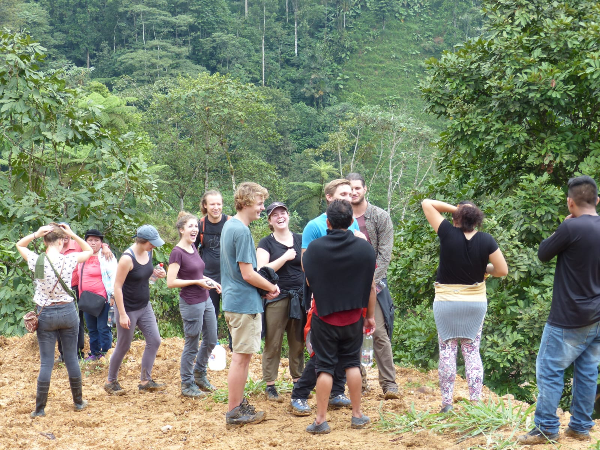
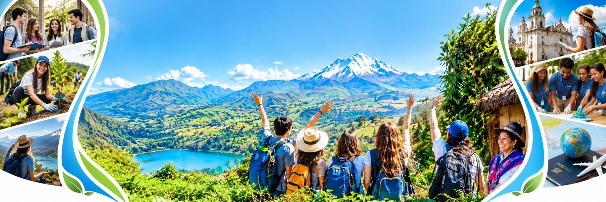

¿Quieres vivir una experiencia profesional en Ecuador? CIDCI busca conectar universidades, estudiantes y comunidades nacionales y extranjeras, puedan desarrollar sus prácticas en Ecuador, CIDCI mientras conocen nuestra cultura y participan en proyectos de impacto comunitario.
La Fundación Centro de Innovación y Desarrollo Comunitario Internacional (CIDCI) los recibirá con los brazos abiertos en los aeropuertos de Quito o Guayaquil y los trasladaremos a nuestras instalaciones todo esto con previos acuerdos que tengamos con cada uno de ustedes
Los pasantes podrán aplicar los conocimientos adquiridos durante su formación académica y, al mismo tiempo, contribuir al desarrollo de comunidades. Tu experiencia puede transformar tu futuro.
Aquí podrás transformar lo que aprendes en las aulas en experiencias reales, trabajando junto a nuestro equipo y participando en proyectos con propósito.
¿Por qué hacer tu pasantía con nosotros?

Porque
- Aprendes haciendo: participando en proyectos y actividades reales relacionados con tu carrera.
- Desarrolla nuevas habilidades: fortalece tus capacidades profesionales, de comunicación, trabajo en equipo, organización y liderazgo.
- Conoce el trabajo de una fundación desde dentro: descubre cómo se diseñan, gestionan y ejecutan iniciativas de impacto social.
- Aporta con tus ideas y la de otros pasantes para enriquecer tu conocimiento: valoramos la creatividad, la iniciativa y las nuevas perspectivas que aportan cada uno de los estudiantes y voluntarios.
- Construye experiencia profesional: suma una experiencia significativa a tu trayectoria académica y profesional.
- Genera impacto: utiliza tus conocimientos y talentos para contribuir a iniciativas que buscan mejorar la vida de otras personas y comunidades para un mundo mejor.
¿Qué estudiantes buscamos?
Recibimos estudiantes de diferentes carreras y áreas de formación que tengan:
Compromiso · Responsabilidad · Iniciativa · Curiosidad · Trabajo en equipo · Vocación de servicio.
¿En áreas profesionales como?
🌱 Profesiones relacionadas con medio ambiente y naturaleza
- 🌳 Conservación de bosques y biodiversidad
- 💧 Agua y recursos hídricos
- 🌱 Agricultura y producción sostenible
- 🐾 Fauna y vida silvestre
- 🌎 Cambio climático y gestión ambiental
- ♻️ Reciclaje, residuos y economía circular
- 🏞️ Turismo sostenible y naturaleza
- 📚 Educación y sensibilización ambiental
Otras profesiones:
- 🌱 Ambiente y Sostenibilidad
- 👥 Desarrollo Comunitario
- 🏥 Salud y Bienestar
- 📚 Educación y Cultura
- 💻 Tecnología e Innovación
- 💼 Administración y Emprendimiento
- 📢 Comunicación y Marketing
- ⚖️ Derecho y Gestión Pública
- 🏗️ Ingeniería y Arquitectura
- 🌎 Turismo y Patrimonio
- 🌾 Agropecuaria y Desarrollo Rural
- 🔬 Ciencia e Investigación
No buscamos únicamente conocimientos técnicos. Buscamos jóvenes con ganas de aprender, aportar y hacer la diferencia.
Una experiencia que también te transforma
Una pasantía no tiene que ser solamente un requisito para graduarte.
Puede ser el espacio donde descubras nuevas capacidades, conozcas otras realidades, desarrolles tu perfil profesional y encuentres nuevas formas de contribuir a tu comunidad.

Tu carrera te prepara para transformar tu futuro.
Tu talento también puede ayudar a transformar el presente.

¿Quieres hacer tu pasantía con nosotros?
Si eres estudiante universitario y quieres formar parte de una experiencia profesional con propósito, nos encantaría conocerte.
Cuéntanos sobre ti, tu carrera, tus intereses y lo que te gustaría aportar, estamos para responderte a través del correo electrónico o directamente al WhatsApp haz clip en el logo de WhatsApp que está aquí en la página y te responderemos de inmediato.